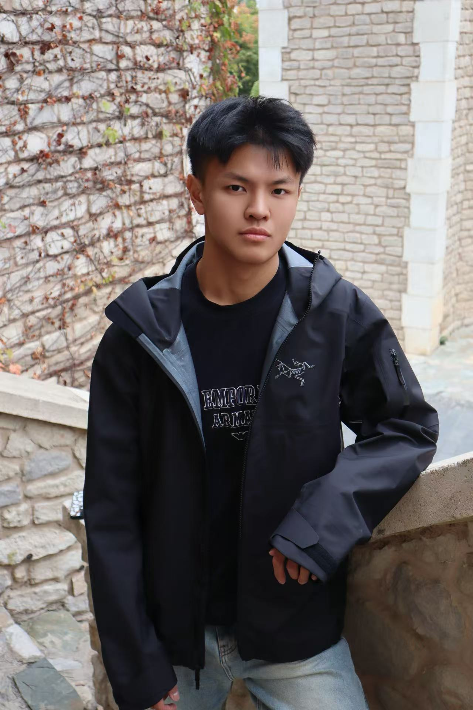

Supply Chain Foundations
- Supplier relationship management
- Resource planning
- Process organization
- Stakeholder coordination
Rutgers University · Supply Chain Management
I am a Rutgers supply chain management student who combines stakeholder coordination, sponsorship development, and technology to build organized, results-focused operations.

I am a second-year Supply Chain Management student at Rutgers University pursuing opportunities in supply chain, procurement, operations, and supplier relationship management.
As External Relations Department Director for the Rutgers Chinese Students and Scholars Association, I managed sponsor outreach, relationship development, agreement coordination, and resource tracking. My work secured the organization’s annual sponsorship funding and strengthened the systems used to manage external partnerships.
Three connected initiatives from my external relations leadership experience.
Partnership Development
Led external sponsor outreach for the Rutgers Chinese Students and Scholars Association and secured the organization’s annual sponsorship funding through structured communication and partnership development.
Read case studyProcess Improvement
Applied AI tools to organize sponsorship agreements, refine business language, and standardize working documents while maintaining human review and organizational control.
Read case studyOperations & Data Organization
Structured sponsor research, ownership, contact channels, follow-up dates, and partnership progress in a shared tracking system designed to improve visibility and accountability.
Read case studyBachelor’s student · Supply Chain Management
Let’s connect
I welcome conversations about internships, entry-level opportunities, student leadership, and operational improvement.